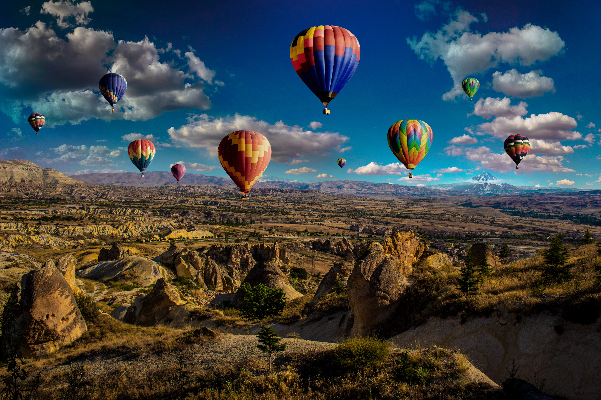

Dünyaya açılmadan önce ülkemizdeki güzellikleri keşfetmeye ne dersiniz? Tarih boyunca pek çok farklı medeniyete ev sahipliği yapan, coğrafi konumuyla dünyanın en önemli geçiş güzergahlarından biri olan Anadolu toprakları, bu birikimin izlerini taşıyor. Türkiye'de görülmesi gereken birçok güzel yer bulunuyor. İşte doğudan batıya, kuzeyden güneye Türkiye'de görülmesi gereken yerler...

KAPADOKYA

Kapadokya'nın en iyi zamanı her zaman, dört mevsim! Her gidişinizde ayrı bir yüzünü gördüğünüz, her gidişinizde farklı bir deneyim yaşadığınız Türkiye'deki ender yerlerden. Tabi her mevsimin de beraberinde getirdiği artılar ve eksiler oluyor. Bu nedenle de bizim tavsiyemiz Kapadokya'nın genelinden ziyade, kafanızdaki deneyimler için en iyi zamanları kovalamak olur. Balona mı binmek istiyorsunuz o zaman balon için en uygun hava şartlarının olduğu yaz ve bahar aylarını tercih edin. Çünkü kış ayamadığı için kalkış izinleri alınamayabiliyor. Doğa yürüyüşleri ve bisiklet gibi diğer birçok aktiviteyi, uygun ekipman ve kıyafetlerinizin olması şartıyla yapmanız mümkün ama ilk deneyimleriniz ve ne tür ekipman kullanacağınızı bilmediğiniz aktiviteler zorlu hava şartlarında sizi zorlayabilir. Ayrıca hobinize göre değişen festivaller ve yarışmalar gibi önemli tarihleri de zaman belirleme konusunda mihenk taşı almak isteyebilirsiniz. Bu yüzden burada yapmak istediğiniz neler varsa tarihlerinizi onların dönem ve mevsim şartlarına göre belirleyin.
NEMRUT

M.Ö. 163 ve M.S. 72 yılları arasında, bu bölgede egemenlik kuran Kommagene Krallığı’nın kralı I. Antiochus, atalarına ve tanrılara minnettarlığını göstermek için krallığının en yüksek dağına anıtsal heykeller ve kendi mezarını yaptırmış. (I. Antiochus epey tekdir edilesi bir lider, aşağıdaki tarih kısmını mutlaka okuyun.) Aynı heykellerden 2 grup var. Bir grup heykel güneşin doğuşunu, diğer grup da batışını selamlayacak şekilde yerleştirilmiş. Heykellerin daha çok yerde duran kafaları fotoğraflandığı için heykellerin bundan ibaret olduğu yanılgısına düşebilirsiniz. Aslında kafalar yukarıdaki fotoğrafta görünen oturur pozisyondaki vücudlara ait ama zamana yenik düşmüşler. Dolayısı ile burayı yaşamanın en güzel yolu gün doğuşunda ya da batışında burada olmak. Özellikle de gün doğuşu öneriliyor. Gerçekten de efsane güzel.
Karanlıkta göz gözü görmezken tepeye çıkıp, kendinize bir yer seçiyorsunuz. Sonra sanki sahnenin perdesi kalkar gibi gün aydınlanıyor ve hiç farkında olmadığınız muhteşem bir manzara ile karşılaşıyorsunuz. Önce önünüzden Nemrut’un hala aktif bir volkan olduğu zamanlardan kalmış, kurumuş lavlar başlıyor. Sonra aşağıda dağın neredeyse her yerinin bir su ile çevrili olduğunu görüyorsunuz. İleride puslu havanın içinden dağ silüetleri beliriyor. Çok derin ve mistik bir huzuru var.
EFES ANTİK KENTİ

Efes Antik Kenti MÖ 8600 dönemine basit bir yerleşim olarak başlamış. Yüzyıllar içinde büyüyerek döneminin en önemli dünya başkentlerinden birisi olmuş.
Kurulduğu İzmir’in Selçuk ilçesinin Anadolu’nun en verimli topraklarından birisi olması, ticaret yollarının buradan geçmesi, ve dünyanın doğusu ve batısını birbirine bağlayan bir limana sahip olması sayesinde şehir çok gelişmiş. Altın çağını ise MÖ 129’da Roma İmparatorluğu’na bağlandıktan sonra görmüş. Asya Eyaleti’nin başkenti olmuş. Bu dönemde (MÖ 2.-1. yüzyıl) Efes 200.000 kişiyi aşan nüfusu ile bir çağının en büyük metropollerinden birine dönüşmüş.
Şehirde biriken zenginlik mimariye de yansımış. Tekrar ayağa kaldırılarak sergilenen Celsus Kütüphanesi’nin ihtişamından ne kadar etkileyici bir şehir olduğunu tahmin etmek mümkün. Roma ile yarışır nitelikte olduğu söyleniyor.